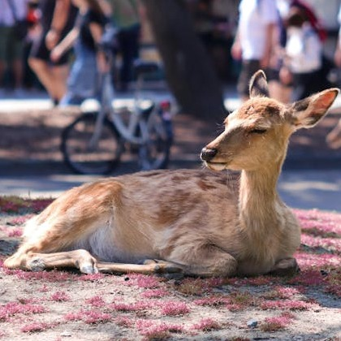
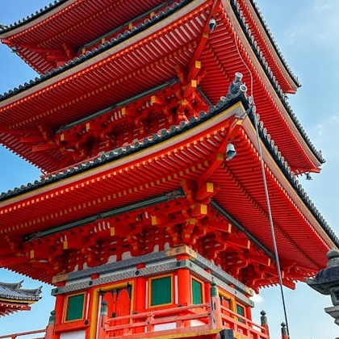
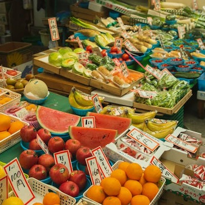

Some facts about Japan.
Almost four-fifths of Japan is covered with mountains. The Japanese Alps run down the centre of the largest island, Honshu. The highest peak and Japan’s most famous mountain is Mount Fuji, a cone-shaped volcano considered sacred by many Japanese.

Japan is home to some wonderful wildlife! Some of the country’s most incredible creatures include the sika deer, red-crowned crane, stellar’s sea eagle and one of the coolest critters on the planet…the Japanese macaque monkey!

Japan is the only country in the world with a reigning emperor. Emperors have no real power, but they are still respected as a symbol of the country’s traditions and unity.

Japanese cuisine consists of lots of rice, fish and vegetables. With little fat and lots of vitamins and minerals, their food is very healthy. It’s believed their nutritious diet is what makes the Japanese, on average, one of the longest living populations in the world!